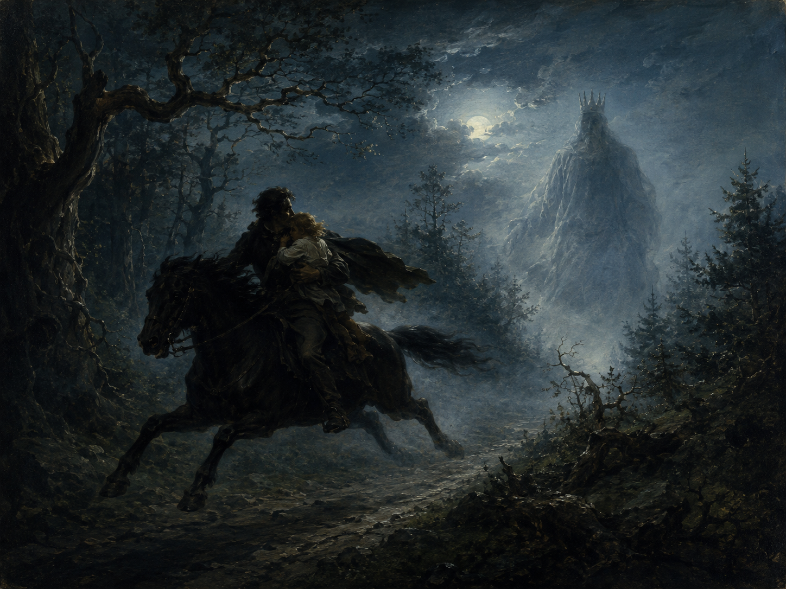

Wer reitet so spät durch Nacht und Wind?
以疑问句开篇，制造悬念，是叙事谣曲（Ballade）的典型开场方式；durch Nacht und Wind 是介词短语作状语，无冠词的并列名词强调抽象、氛围化的“暗夜与风”。
魔王
Balladen（叙事谣曲）
狂飙突进 · Sturm und Drang
1782年（原为歌唱剧《Die Fischerin》插曲）

图片由 AI 生成
Wer reitet so spät durch Nacht und Wind?
以疑问句开篇，制造悬念，是叙事谣曲（Ballade）的典型开场方式；durch Nacht und Wind 是介词短语作状语，无冠词的并列名词强调抽象、氛围化的“暗夜与风”。
Siehst Vater, du den Erlkönig nicht?
呼语 Vater 插入主谓之间，是口语/诗歌中常见的插入语序；孩子与父亲的对话贯穿全诗，且不加引号区分——原文中只有魔王的话使用引号，暗示魔王的“话语”在文本层面被特殊标记，也许象征其虚实难辨的地位。
Den Erlenkönig mit Kron' und Schweif? –
Kron' und Schweif（王冠与曳尾）并列描摹魔王的王者装束，Schweif 此处指“曳尾、拖垂的长尾”（而非长袍），Kron' 为 Krone 的省音形式；破折号标记说话的中断或语气的悬置。
„Du liebes Kind, komm, geh mit mir!
全诗唯一被引号标出的话语是魔王的引诱之词，三次诱惑分别始于第9、17、25行（游戏、女儿、强力），层层递进，体现魔王话语的“甜蜜—亲密—威胁”变化。
In dürren Blättern säuselt der Wind.
父亲每次都用自然现象（薄雾、风声、老柳树）来“合理化”解释孩子所见所闻，形成全诗“超自然 vs. 理性解释”的核心张力。
und bist du nicht willig, so brauch ich Gewalt.“
这是全诗语气转折的关键句：魔王从温柔诱惑转为赤裸威胁，brauchen 在此为“需要、动用”之意（不同于现代口语中作助动词的 brauchen + zu）。
Dem Vater grauset's, er reitet geschwind,
grausen 是非人称动词（unpersönliches Verb），固定结构为 es graust jmandem（第三格），诗中省略 es，倒装为 "Dem Vater grauset's"（= Es grauset dem Vater = 父亲感到恐惧）。
in seinen Armen das Kind war tot.
全诗最后一行以极简的陈述句收尾，不加任何修饰或解释，与前面层层递进的悬念、对话形成强烈反差，制造震撼的戏剧效果。
| Infinitiv | Präsens 3. Sg. |
Präteritum | Perfekt | Partizip II | Konjunktiv II | Hilfsverb |
|---|---|---|---|---|---|---|
| reiten | reitet | ritt | ist geritten | geritten | ritte | sein／haben |
| ↳ 诗中出现现在式（reitet）与叙事中的隐含完成时用法背景。 | ||||||
| bergen | birgt | barg | hat geborgen | geborgen | bärge | haben |
| ↳ 诗中用第二人称现在式 "birgst"，注意 e→i 元音变化。 | ||||||
| hören | hört | hörte | hat gehört | gehört | hörte | haben |
| ↳ 诗中用古典第二人称词尾 "hörest du"（今 hörst du）。 | ||||||
| sehen | sieht | sah | hat gesehen | gesehen | sähe | haben |
| ↳ 诗中多次出现 "siehst du" "ich seh"（口语化省去 -e）等形式。 | ||||||
| grausen（unpersönlich） | graust | grauste | hat gegraust | gegraust | grauste | haben |
| ↳ 诗中用现在式 "grauset's"（= grauset es）。 | ||||||
Wer reitet so spät durch Nacht und Wind? （本句为现在时，仅引出 reiten 一词）
Dem Vater grauset's, er reitet geschwind,
Siehst Vater, du den Erlkönig nicht?
Willst, feiner Knabe, du mit mir gehn? … Meine Töchter sollen dich warten schön;
《魔王》取材于丹麦民谣传说，经赫尔德（Johann Gottfried Herder）译为德文《Erlkönigs Tochter》（收入赫尔德1778年出版的《Volkslieder》——该书在赫尔德身后的1807年再版时改题《Stimmen der Völker in Liedern》）后传入德语世界；一般认为 "Erlkönig" 是对丹麦语 "ellerkonge"（精灵之王）的误译（本应译作“精灵王”而非与榿木 Erle 相关的“榿木王”），但这一误译反而催生了德语文学史上最著名的超自然意象之一。
歌德1782年将其写作为歌唱剧《Die Fischerin》中的插曲。舒伯特1815年为其谱写的同名艺术歌曲（D. 328，作品第1号）以钢琴伴奏模拟疾驰的马蹄声、并用不同音区区分叙述者、父亲、孩子、魔王四种声音，成为艺术歌曲史上的里程碑，据传是舒伯特17、18岁时的作品。
全诗的核心张力在于“理性解释 vs. 超自然真实”：父亲始终用自然现象（雾、风、柳树）解释孩子的恐惧，但结局证明孩子的感知才是“真实”的——这种叙事结构常被视为浪漫主义文学中“表象与本质”命题的经典范例。
中文译文为本站学习译文（AI 辅助），采用叙事体直译，尽量保留原诗对话体的语气变化（父亲的安抚、孩子的惊恐、魔王的诱惑与威胁）。由于原诗押韵严谨（AABB 双行体），中译未强求押韵，以准确传达内容与语气为优先。已知存在钱春绮等译者的中文译本，因版权原因本站不转载全文。
德文正文通过两个独立来源逐节核对（deutschelyrik.de 与英文维基百科所引版本），8节32行内容、词序完全一致，仅存在正字法层面的新旧拼写差异（如 faßt/fasst、Weh's 的撇号使用等），不影响文本内容，判定为高可信度文本。
未能成功访问 de.wikisource.org 与 zeno.org 对应页面进行第三方比对（工具访问受限/超时），建议后续有条件时补充核对一次，尤其是标点符号（引号、破折号的具体位置）的细节。